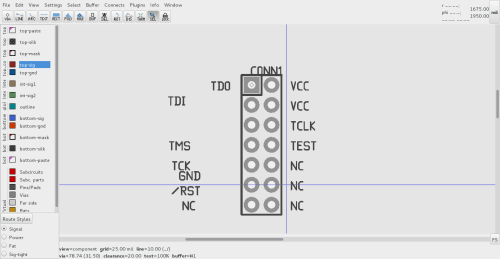
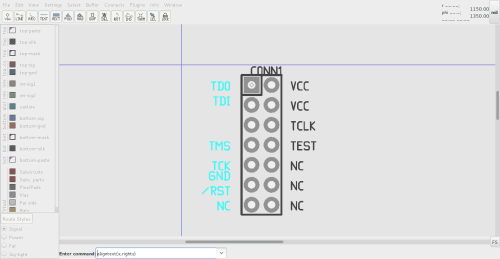
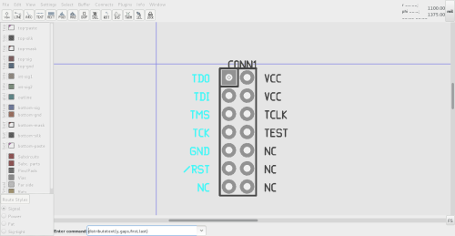

| Command | description | image | |||
|---|---|---|---|---|---|
| import and text tools | Text for a TI 14 pin jtag connector is generated |  | |||
| aligntext(x,rights) | The text is aligned along the right side to
justify up with the 14 pin connector part
The last part is positioned alongside pin 7 to delimit the last position 
| distributetext(y,gaps,first,last) | The text is repositioned at even spacing between the first and last element | 
| |